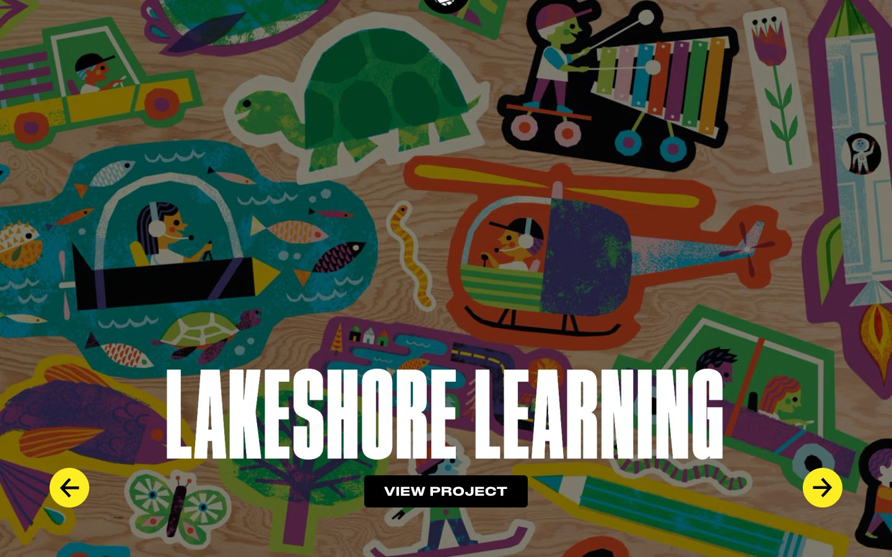

References / Website / 215
Invisible Creature website
The studio’s home slider shows a Lakeshore Learning project: flat cut-shape stickers of vehicles, animals, and children on plywood, under a huge condensed title.
- Source
- invisiblecreature.com
- Creator
- Invisible Creature
- Style
- Mid-century modern (agent-proposed, not yet reviewed by a person)
- Moods
- Playful, bright, crafted, childlike
- Evidence
- Captured with
tools/capture.mjs(headless Chrome, 1440 × 900) on 28 September 2026 and inspected. The screenshot shows the first viewport; the measurement covers up to four screens. The hero is the first slide of a rotating slider. - Reviewed
- Rights
- Third-party work, stored with credit for commentary. License: unverified. Rights policy
Observed
- Die-cut sticker shapes cover a plywood background: a submarine in a teal pond with fish, a helicopter, a turtle, a truck, a child playing a xylophone on wheels, a pencil, and a rocket.
- Each sticker is built from flat shapes in teal, orange, green, yellow, purple, and pink, with a white or colored border and speckled, screen-print-like texture in some fills.
- Children are drawn as simple profiles with round heads and dot eyes.
- A dark translucent scrim covers the whole image to make the title readable.
- “LAKESHORE LEARNING” is set in very large white ultra-condensed capitals over the lower third, with a black “VIEW PROJECT” button and two yellow round arrow buttons.
Why it belongs
The illustration method matches the style’s children’s-book side: flat planes, rough print texture, and simple figures. The ultra-condensed display type and the purple are contemporary.
Measured: round-share 0.94 (the round buttons) and heading weight 700 pass; the CSS sees one hue and a high accent chroma from the yellow buttons.
Borrow
Give flat illustrations a speckled print texture inside the shapes, not across the page.
Cut each figure out with a thin light border, like a sticker or cut paper.
Measured
Machine-extracted by tools/extract-traits.js on . Full measurement.
- Type families
- Apercu (59%), Staff Wide (19%), Staff XX Condensed (14%)
- Type scale ratio
- 1.36
- Median radius
- 12 px
- Mean chroma
- 0.04
- Palette
- #000000 60%
- #ffffff 34%
- #fcee21 4%
- #b2ebf2 2%
- #07b8ba 0%

